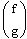
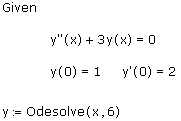
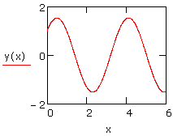

Ordinary Differential Equation Solve Blocks |
Odesolve([vector], x, b, [npoints]) Returns the solution to an ordinary differential equation (ODE), subject to initial value or boundary value constraints. The ODE must be linear in its highest derivative term, and the number of initial and boundary conditions must equal the order(s) of the ODE(s). To use Odesolve, create a solve block that ends with the Odesolve command.
vector (used only for systems of ODEs) is a vector of function names (with no variable names included) as they appear within the solve block. For example, if you are solving for the functions f(x) and g(x), vector would be

You cannot use array subscripts to name functions, but you can use literal subscripts.
Odesolve returns the solution as a function of the independent variable. To evaluate this function, Odesolve saves solutions at npoints equally spaced points in the integration interval, and then interpolates between those points using the function lspline.
Note: The larger the value of npoints, the more accurate the interpolated solution function is. Usually, the default value of npoints is sufficient to obtain good results, but if you are solving the ODE over a large interval, set npoints to a value larger than the default.
To solve the ODE
y″ + 3y = 0
subject to the initial conditions
y(0) = 1, y′(0) = 2
create the following solve block, using Boolean equals ([Ctrl] [=]) in the differential equation and initial conditions. To insert the derivative symbols for y′ and y″, press [Ctrl] [F7].

The solution y is a function of the variable x specified by the first argument to Odesolve. The graph of the solution is shown below:

You can choose the method for solving the ODE by right-clicking on Odesolve in the solve block and selecting one of the following from the drop-down menu:
Adams/BDF - The default method. Odesolve dynamically detects whether the ODE is stiff or non-stiff, and calls one of the following solvers accordingly:
Radau is the only method that solves systems with algebraic constraints. If your system has such constraints, Odesolve automatically uses the Radau algorithm, regardless of your selection from the drop-down menu.
The following notes on constructing solve blocks apply. Within the body of the block: